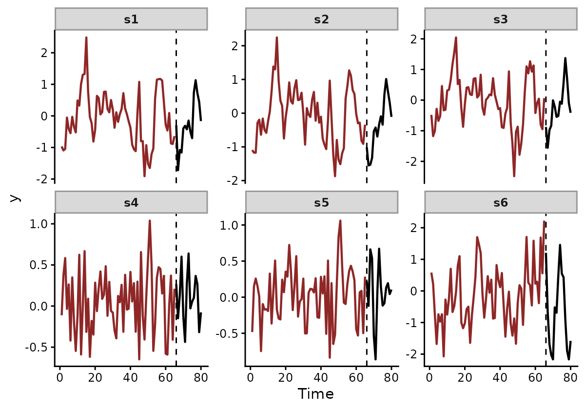
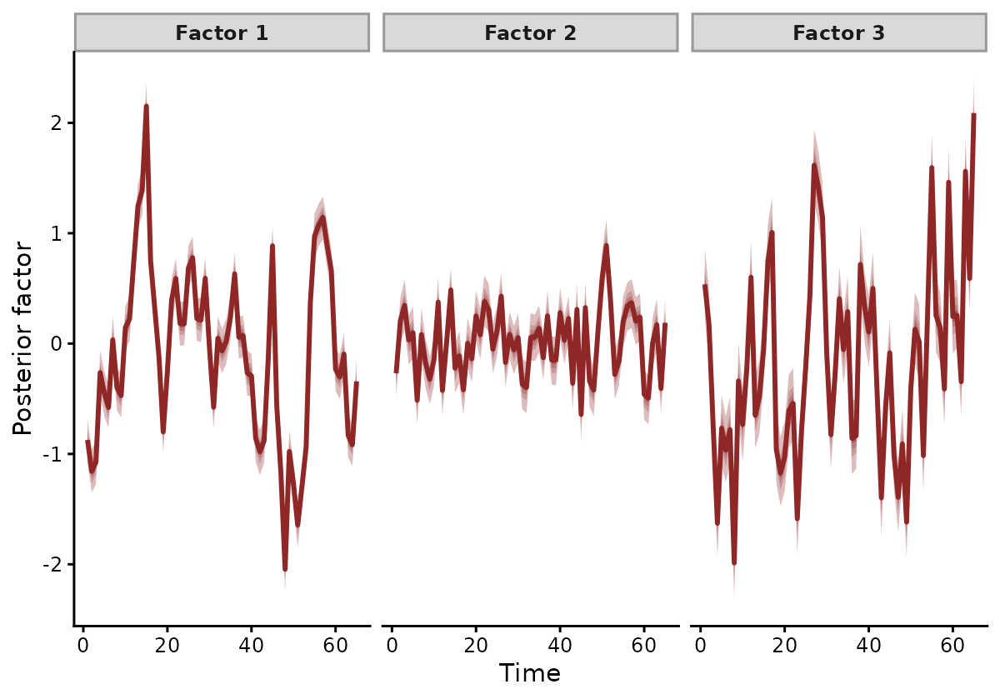
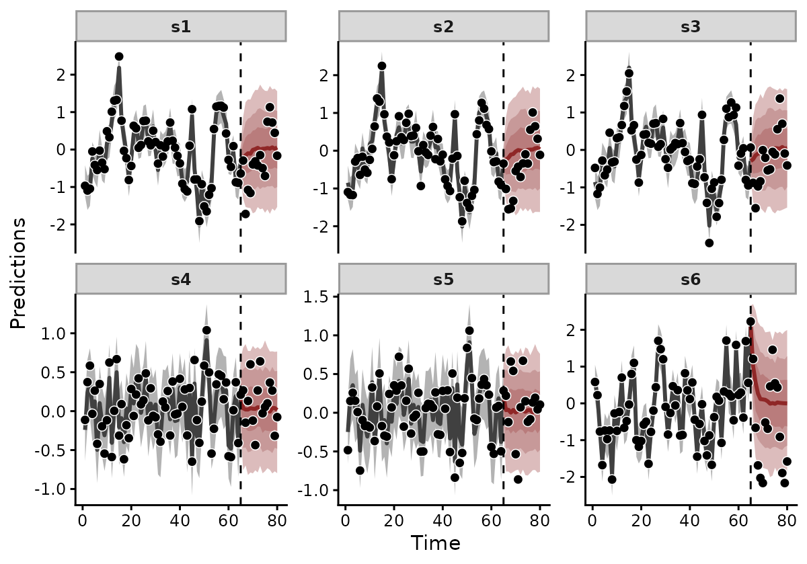
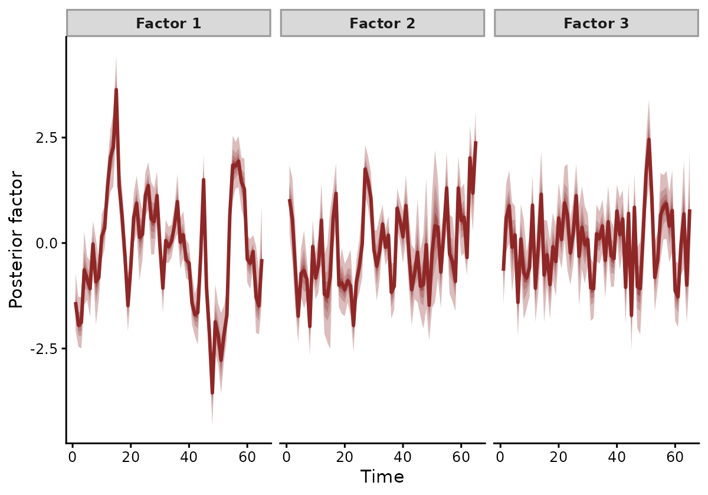
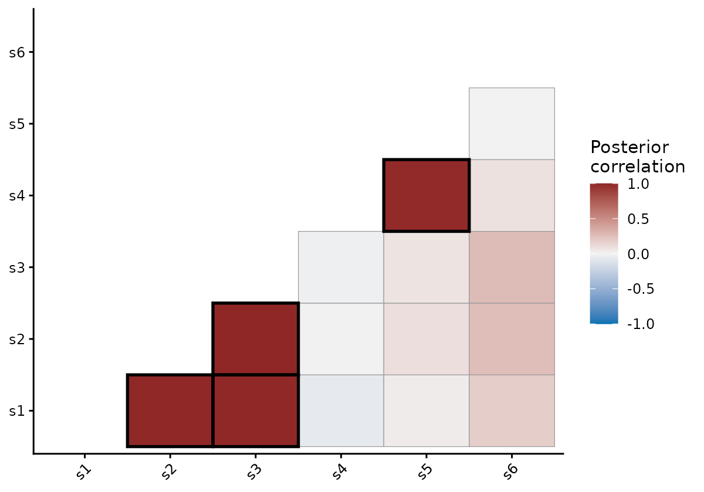
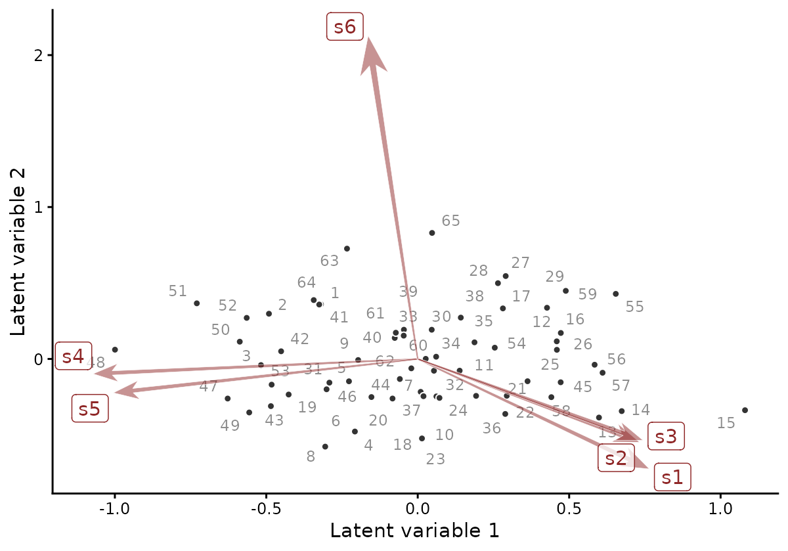
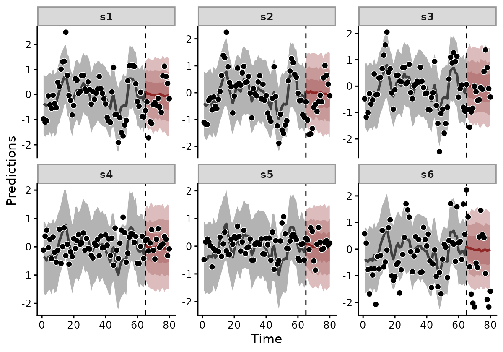

Series measured together often move together. Sites in one habitat
share weather. Species in one guild share resource pulses. A dynamic
factor model describes that common variation with a small number of
latent trends. It writes each series as a weighted sum of them (Zuur et
al. 2003; Holmes et al. 2012). In mvgam the
trend_map argument sets which series load on which trend.
This vignette simulates six series from three trends and fits three
models: one given the true loadings, one that estimates them and one
that pools every series onto a single trend. Forecast scores on held-out
data then compare the three.
The model
For series \(j\) and latent trend \(k\), the mean of each series on the link scale is a linear combination of the trends:
\[\begin{align*} y_{j, t} & \sim F(\mu_{j, t}, \boldsymbol{\theta}) \\ g(\mu_{j, t}) & = \beta_0 + \beta^\top \mathbf{x}_{j, t} + \sum_{k = 1}^{N_{lv}} Z_{j, k} \, z_{k, t} \\ z_{k, t} & \sim \text{AR}(1) \text{ or any other trend model} \end{align*}\]
\(Z\) is the loading matrix, with one row per series and one column per trend. Row \(j\) gives the weight of each trend in series \(j\). Every series with a non-zero weight on trend \(k\) uses the same latent path \(z_{k, 1:T}\). All of those series inform its posterior. With fewer trends than series, the model reduces the dimension of the problem.
Three ways to write trend_map
trend_map supplies \(Z\) in one of three forms:
- A keyword.
"identity"gives each series its own trend."shared"gives every series the same trend. - A
data.framewith columnsseriesandtrend. Series given the same trend number share that trend with a loading of one. - A numeric matrix with one row per series and one column per trend.
mvgam holds each number fixed and estimates each
NA.
The matrix form covers partial knowledge. Here five series have known loadings and the fifth series is free to load on any of three trends:
Z_partial <- rbind(
s1 = c(1, 0, 0),
s2 = c(1, 0, 0),
s3 = c(1, 0, 0),
s4 = c(0, 1, 0),
s5 = c(NA, NA, NA),
s6 = c(0, 0, 1)
)Passed as trend_map = Z_partial, the fit estimates the
three NA entries. summary() lists them under
Factor Loadings. A matrix of all NA estimates
every loading, as shown later in this vignette.
Simulated data
To compare the three models with known loadings, we simulated six series from three AR(1) trends. Trend 1 is strongly autocorrelated (\(\phi_1 = 0.85\)) and drives series 1 to 3. Trend 2 is weakly autocorrelated (\(\phi_2 = 0.15\)) and drives series 4 and 5. Trend 3 (\(\phi_3 = 0.55\)) has the largest innovation SD and drives series 6 alone. The last 15 of the 80 time points are held out.
set.seed(3)
n_time <- 80
n_series <- 6
n_lv <- 3
n_train <- 65
phi_true <- c(0.85, 0.15, 0.55)
sig_true <- c(0.5, 0.35, 0.8)
# Each trend starts at its stationary distribution
lv <- matrix(NA, n_time, n_lv)
lv[1, ] <- rnorm(n_lv, 0, sig_true / sqrt(1 - phi_true^2))
for (t in 2:n_time) {
lv[t, ] <- phi_true * lv[t - 1L, ] + rnorm(n_lv, 0, sig_true)
}
# Series 1-3 load on trend 1, series 4-5 on trend 2, series 6 on trend 3
Z_true <- matrix(0, nrow = n_series, ncol = n_lv)
Z_true[cbind(1:6, c(1, 1, 1, 2, 2, 3))] <- 1
# Observations add Gaussian noise with SD 0.2
y_mat <- lv %*% t(Z_true) +
matrix(rnorm(n_time * n_series, 0, 0.2), n_time, n_series)
sim_data <- data.frame(
time = rep(seq_len(n_time), n_series),
series = factor(
rep(paste0("s", seq_len(n_series)), each = n_time),
levels = paste0("s", seq_len(n_series))
),
y = as.numeric(y_mat)
)
train <- sim_data[sim_data$time <= n_train, ]
test <- sim_data[sim_data$time > n_train, ]mvgam_data() checks the training data and plots each
series, with the held-out points in black:
mvgam_data(train, family = gaussian(), trend_formula = ~ AR(),
newdata = test)
The six simulated series. Series 1 to 3 follow one trend, series 4 and 5 a second, and series 6 a third. Black points after the dashed line are held out.
Fitting known loadings
The first model is given the true grouping as a
data.frame:
tm_known <- data.frame(
series = paste0("s", seq_len(n_series)),
trend = c(1L, 1L, 1L, 2L, 2L, 3L)
)
tm_known
#> series trend
#> 1 s1 1
#> 2 s2 1
#> 3 s3 1
#> 4 s4 2
#> 5 s5 2
#> 6 s6 3The observation formula holds an intercept alone.
AR(p = 1) gives each of the three trends its own AR(1)
process. Passing newdata = test stores the held-out data on
the fit for forecast() to use later.
fit_known <- mvgam(
formula = y ~ 1,
trend_formula = ~ AR(p = 1),
trend_map = tm_known,
data = train,
newdata = test,
family = gaussian(),
chains = 2L,
iter = 1000L,
warmup = 500L,
silent = 2L
)
summary(fit_known)
#> Family: gaussian
#> Links: mu = identity; sigma = log
#> Formula: y ~ 1
#> Data: train (Number of observations: 390)
#> Series: 6
#> Trends: AR(1)
#> Draws: 2 chains, each with iter = 1000; warmup = 500; thin = 1;
#> total post-warmup draws = 1000
#>
#> == Observation Model ==
#> Regression Coefficients:
#> Estimate Est.Error l-95% CI u-95% CI Rhat Bulk_ESS Tail_ESS
#> Intercept 0.02 0.05 -0.07 0.12 1.02 203 431
#>
#> Further Distributional Parameters:
#> Estimate Est.Error l-95% CI u-95% CI Rhat Bulk_ESS Tail_ESS
#> sigma 0.20 0.01 0.18 0.22 1.01 377 469
#>
#> == Trend Model ==
#> Trend Specific Parameters:
#> Estimate Est.Error l-95% CI u-95% CI Rhat Bulk_ESS Tail_ESS
#> sigma_trend[1] 0.54 0.05 0.45 0.65 1.01 207 370
#> sigma_trend[2] 0.34 0.04 0.28 0.42 1.00 329 620
#> sigma_trend[3] 0.82 0.08 0.67 0.99 1.01 214 474
#> ar1_trend[1] 0.71 0.08 0.57 0.86 1.01 180 379
#> ar1_trend[2] 0.06 0.13 -0.20 0.31 1.00 245 390
#> ar1_trend[3] 0.46 0.12 0.21 0.71 1.01 168 282
#>
#> Draws were sampled using sampling(NUTS). For each parameter, Bulk_ESS
#> and Tail_ESS are effective sample size measures, and Rhat is the potential
#> scale reduction factor on split chains (at convergence, Rhat = 1).
#>
#> Next steps:
#> - `pp_check(fit)`: posterior predictive checks
#> - `forecast(fit, newdata = ...)`: out-of-sample forecasts
#> - `lfo_cv(fit)`: leave-future-out model comparison
#> Use `how_to_cite(fit)` for a methods paragraph and `methods_md(fit)` for its equations.summary() reports one AR coefficient and one innovation
SD per trend. The 95% intervals of all six parameters contain the
simulated values. The observation SD is estimated at its true value of
0.2.
plot(type = "factors") draws each latent trend with the
share of the series-level variance it explains. Because three of the six
series load on it, trend 1 explains the most. Trend 3 drives one series
and comes second, as its innovations are the largest.
plot(fit_known, type = "factors")
The three latent trends of the model given the true loadings, each labelled with the share of series-level variance it explains.
forecast() extends each trend over the held-out times
and maps the draws back to the series through \(Z\). Series on the same trend receive the
same latent forecast. The forecast for the weakly autocorrelated trend
returns to its mean within a few steps. The forecast for the strongly
autocorrelated trend returns slowly.

Forecasts from the model given the true loadings. Points are observations, and those after the dashed line were held out.
Estimating the loadings
When the grouping is unknown, a matrix of NA asks mvgam
to estimate every loading. The loadings take a Student-t prior. The
innovation SD of every factor is fixed at one to set the scale of the
loadings. Because each factor has its own AR coefficient, the model
distinguishes the factors by their dynamics. Only their order and signs
are arbitrary. mvgam orders the factors by the variance they explain and
gives each a positive largest loading.
fit_free <- mvgam(
formula = y ~ 1,
trend_formula = ~ AR(p = 1),
trend_map = matrix(NA_real_, nrow = n_series, ncol = n_lv),
data = train,
newdata = test,
family = gaussian(),
chains = 2L,
iter = 1000L,
warmup = 500L,
silent = 2L
)
summary(fit_free)
#> Family: gaussian
#> Links: mu = identity; sigma = log
#> Formula: y ~ 1
#> Data: train (Number of observations: 390)
#> Series: 6
#> Trends: AR(1)
#> Draws: 2 chains, each with iter = 1000; warmup = 500; thin = 1;
#> total post-warmup draws = 1000
#>
#> == Observation Model ==
#> Regression Coefficients:
#> Estimate Est.Error l-95% CI u-95% CI Rhat Bulk_ESS Tail_ESS
#> Intercept 0.03 0.05 -0.08 0.13 1.01 255 351
#>
#> Further Distributional Parameters:
#> Estimate Est.Error l-95% CI u-95% CI Rhat Bulk_ESS Tail_ESS
#> sigma 0.20 0.01 0.18 0.22 1.00 405 645
#>
#> == Trend Model ==
#> Trend Specific Parameters:
#> Estimate Est.Error l-95% CI u-95% CI Rhat Bulk_ESS Tail_ESS
#> ar1_trend[1] 0.70 0.09 0.52 0.87 1.01 256 459
#> ar1_trend[2] 0.42 0.13 0.16 0.67 1.01 182 355
#> ar1_trend[3] 0.13 0.16 -0.20 0.46 1.02 157 197
#>
#> Factor Loadings:
#> Estimate Est.Error l-95% CI u-95% CI Rhat Bulk_ESS Tail_ESS
#> Z[s1,1] 0.55 0.07 0.40 0.67 1.01 141 263
#> Z[s2,1] 0.54 0.06 0.42 0.65 1.01 208 254
#> Z[s3,1] 0.54 0.06 0.42 0.66 1.01 205 252
#> Z[s4,1] -0.00 0.06 -0.12 0.11 1.05 102 213
#> Z[s5,1] 0.02 0.06 -0.10 0.13 1.06 107 245
#> Z[s6,1] 0.20 0.20 -0.20 0.59 1.03 49 178
#> Z[s1,2] -0.08 0.15 -0.40 0.19 1.04 54 185
#> Z[s2,2] -0.04 0.14 -0.33 0.23 1.04 55 174
#> Z[s3,2] -0.03 0.15 -0.32 0.24 1.03 67 187
#> Z[s4,2] -0.02 0.11 -0.24 0.19 1.04 59 127
#> Z[s5,2] -0.05 0.11 -0.27 0.15 1.04 59 161
#> Z[s6,2] 0.75 0.11 0.51 0.95 1.01 119 306
#> Z[s1,3] -0.04 0.11 -0.23 0.18 1.05 73 136
#> Z[s2,3] 0.02 0.10 -0.17 0.23 1.06 61 171
#> Z[s3,3] 0.00 0.10 -0.19 0.22 1.06 44 169
#> Z[s4,3] 0.34 0.05 0.24 0.45 1.01 180 247
#> Z[s5,3] 0.34 0.05 0.23 0.44 1.01 156 192
#> Z[s6,3] 0.12 0.26 -0.36 0.59 1.04 53 143
#>
#> Draws were sampled using sampling(NUTS). For each parameter, Bulk_ESS
#> and Tail_ESS are effective sample size measures, and Rhat is the potential
#> scale reduction factor on split chains (at convergence, Rhat = 1).
#>
#> Next steps:
#> - `pp_check(fit)`: posterior predictive checks
#> - `shared_variation(fit)`: factor-implied Delta = Z Sigma Z' (rotation-invariant)
#> - `residual_cor(fit)`: implied cross-series correlations
#> - `forecast(fit, newdata = ...)`: out-of-sample forecasts
#> - `lfo_cv(fit)`: leave-future-out model comparison
#> Use `how_to_cite(fit)` for a methods paragraph and `methods_md(fit)` for its equations.summary() reports the loading of every series on every
factor, where Z[i, k] is the loading of series
i on factor k. Series 1 to 3 load on the first
factor and series 6 on the second. Series 4 and 5 load on the third. The
95% intervals of all other loadings contain zero. The model recovered
the simulated grouping without being given it. The interval of each AR
coefficient contains the simulated value of the trend its factor
matches.
plot(fit_free, type = "factors")
The three latent factors of the model that estimates its loadings. Factors 1, 2 and 3 match trends 1, 3 and 2 of the simulation.
Each factor explains a similar share of the variance as its trend does in the model given the true loadings.
The dependence among series is often the target of a factor model.
residual_cor() computes the correlations that the loadings
imply between each pair of series:
plot(residual_cor(fit_free))
Posterior median correlations among the six series, implied by the estimated loadings.
The correlations show the same grouping. Series 1 to 3 are strongly correlated with one another, as are series 4 and 5. Series 6 is weakly correlated with the rest.
ordinate() shows the same structure as a biplot. Each
arrow is the loading of one series on the first two factors. Each
numbered point is a time. Series that share a trend point in the same
direction.
ordinate(fit_free)
Ordination of the model that estimates its loadings. Arrows are series loadings on the first two factors, and numbered points are times.
Pooling every series
To see what a wrong grouping costs, the third model puts all six
series on one trend with trend_map = "shared":
fit_pooled <- mvgam(
formula = y ~ 1,
trend_formula = ~ AR(p = 1),
trend_map = "shared",
data = train,
newdata = test,
family = gaussian(),
chains = 2L,
iter = 1000L,
warmup = 500L,
silent = 2L
)
Forecasts from the model that pools all six series onto one trend. The intervals over the training period are much wider than those of the model given the true loadings.
One trend cannot follow three different sets of dynamics. The model assigns the remaining variation to observation noise. Its intervals over the training period are several times wider than those of the first model.
Comparing forecasts
compare_scores() scores the three forecasts against the
held-out data. The continuous ranked probability score (CRPS) and the
log score are computed for each series and horizon. The energy score is
computed across all series at each horizon. Lower values are better for
all three. The chunk below sums each score over the held-out period.
fc_free <- forecast(fit_free)
total_score <- function(score) {
by_horizon <- summary(compare_scores(
fc_known, fc_free, fc_pooled,
score = score, model_names = c("known", "free", "pooled")
))
colSums(by_horizon[, c("known", "free", "pooled")])
}
totals <- sapply(c("crps", "logs", "energy"), total_score)
round(totals, 1)
#> crps logs energy
#> known 38.2 92.6 19.5
#> free 38.7 94.8 19.8
#> pooled 41.4 110.9 20.5The pooled model has the worst total on all three scores. Its log score of 110.9 compares with 92.6 for the model given the true loadings. The model that estimates its loadings scores 38.7 on CRPS and 94.8 on the log score, close to the 38.2 and 92.6 of the model given the true loadings. In this simulation, estimating the loadings cost little forecast accuracy. A wrong grouping cost much more.
A held-out forecast score is a practical check on a proposed
grouping. Where two candidate trend_map structures are
plausible, fit both and compare their scores.
Where to next
-
?mvgamdescribestrend_mapandloadings_prior, which sets a structured prior on estimated loadings. -
?compare_scoresand?scorelist the available scoring rules. -
?residual_corand?shared_variationgive the correlations and covariances among series, with their intervals. -
?ordinatedescribes the biplot.?active_factorshelps choose the number of factors. -
how_to_cite()writes a methods paragraph for a fitted model with the references for its factor structure.methods_md()writes out its equations. - The forecast
evaluation article covers
lfo_cv()andensemble()for comparing and combining models. - The JSDM
article applies the same factor structure to community data with
jsdgam(). - The VAR article covers models where each series keeps its own trend and the trends affect one another.
- The overview vignette introduces the other trend models and their arguments.
References
Heaps, S. E. and Jermyn, I. H. (2024). Structured prior distributions for the covariance matrix in latent factor models. Statistics and Computing 34, 143. doi:10.1007/s11222-024-10454-0
Holmes, E. E., Ward, E. J. and Wills, K. (2012). MARSS: Multivariate Autoregressive State-space Models for Analyzing Time-series Data. The R Journal 4(1), 11-19. doi:10.32614/RJ-2012-002
Zuur, A. F., Fryer, R. J., Jolliffe, I. T., Dekker, R. and Beukema, J. J. (2003). Estimating common trends in multivariate time series using dynamic factor analysis. Environmetrics 14(7), 665-685. doi:10.1002/env.611